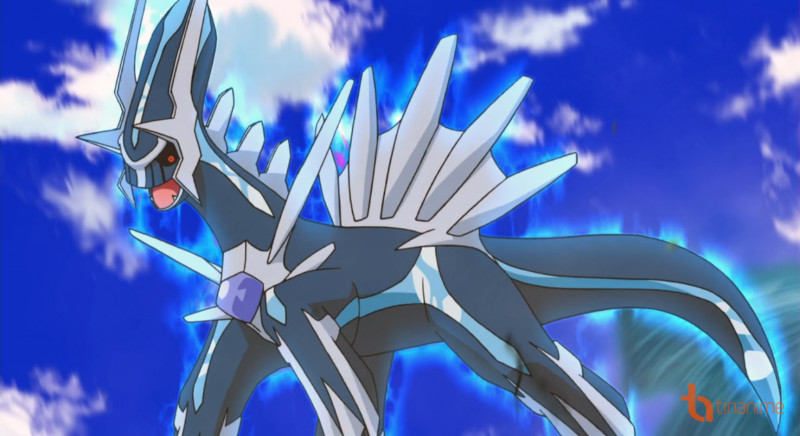

TOP 10 POKÉMON HUYỀN THOẠI MẠNH VÔ ĐỊCH
Pokémon là những sinh vật kì lạ sống trong thế giới Pokémon, bên cạnh những chú Pokémon thông thường, dễ bắt gặp, có những Pokémon vô cùng hiếm, hoặc cả thế giới chỉ có 1 con duy nhất mà thôi, đó chính là Pokémon huyền thoại. Không chỉ vì sự quý hiếm khiến chúng trở thành "huyền thoại" đâu, mà còn cả sức mạnh thần thánh của chúng nữa.
1. Arceus
 Là chúa tể của tất cả các loài Pokémon, sáng tạo ra mọi sinh vật từ buổi đầu tiên, nên cũng hiển nhiên khi nhiều người nghĩ Arceus là Pokémon huyền thoại mạnh nhất. Arceus có tất cả các chỉ số đều ở mức 120. Arceus có thể áp dụng các chiêu thức của mọi thuộc hệ dựa vì hệ của Arceus là multitype (đa hệ). Arceus quả thực là một Pokémon hoàn thiện và dũng mãnh.
Là chúa tể của tất cả các loài Pokémon, sáng tạo ra mọi sinh vật từ buổi đầu tiên, nên cũng hiển nhiên khi nhiều người nghĩ Arceus là Pokémon huyền thoại mạnh nhất. Arceus có tất cả các chỉ số đều ở mức 120. Arceus có thể áp dụng các chiêu thức của mọi thuộc hệ dựa vì hệ của Arceus là multitype (đa hệ). Arceus quả thực là một Pokémon hoàn thiện và dũng mãnh.
2. Mewtwo
 Một con Pokémon được cấy ghép gene tạo ra với mục đích duy nhất là thống trị thế giới. Để đạt được mục đích này, Mewtwo được tạo ra với sức mạnh kinh hoàng (điều này sẽ thấy rõ hơn nếu dò xem các chỉ số của Mewtwo). Khi còn ở dạng thông thường, Mewtwo đã biểu hiện mình là một chủng loại đặc biệt, nhất là với tốc độ vượt trội của nó. Khi được tiến hóa Mega, Mewtwo từ Pokémon huyền thoại trở thành Pokémon "thần thánh" với 2 loài Mewtwo X và MewtwoY.
Một con Pokémon được cấy ghép gene tạo ra với mục đích duy nhất là thống trị thế giới. Để đạt được mục đích này, Mewtwo được tạo ra với sức mạnh kinh hoàng (điều này sẽ thấy rõ hơn nếu dò xem các chỉ số của Mewtwo). Khi còn ở dạng thông thường, Mewtwo đã biểu hiện mình là một chủng loại đặc biệt, nhất là với tốc độ vượt trội của nó. Khi được tiến hóa Mega, Mewtwo từ Pokémon huyền thoại trở thành Pokémon "thần thánh" với 2 loài Mewtwo X và MewtwoY.
3. Rayquaza
 Rayquaza có lẽ sẽ không nằm ở vị trí này trong danh sách nếu không nhờ vào tiến hóa Mega của nó. Mega Rayquaza là một con quái vật có sức tấn công vô cùng kinh hoàng với chỉ số Attack và Special Attack lên đến 180, khiến nó trở thành một đối thủ đáng sợ nhất trong trận đấu. Chỉ cần dính một cú từ chiêu Sword Dance hay Dragon Dance, cũng đủ khiến những đối thủ huyền thoại khác đo ván.
Rayquaza có lẽ sẽ không nằm ở vị trí này trong danh sách nếu không nhờ vào tiến hóa Mega của nó. Mega Rayquaza là một con quái vật có sức tấn công vô cùng kinh hoàng với chỉ số Attack và Special Attack lên đến 180, khiến nó trở thành một đối thủ đáng sợ nhất trong trận đấu. Chỉ cần dính một cú từ chiêu Sword Dance hay Dragon Dance, cũng đủ khiến những đối thủ huyền thoại khác đo ván.
4. Darkrai
Con Pokémon ác thần này dù không có sức lực kinh khủng như các anh em Pokémon Huyền Thoại khác, nhưng các chiêu thức của Darkrai thật không thể không đề phòng được. Chiêu Dark Void (độ chuẩn xác 100%, buộc đối thủ rơi vào giấc ngủ sâu) kết hợp với chiêu Bad Dream (trừ điểm HP của đối thủ đang ngủ) giúp Darkrai không phải vận công sức nhiều mà vẫn đánh bại đối thủ của mình dễ dàng. Mỗi hai chiêu thức độc đáo này cũng đủ khiến Darkrai vượt mặt khối Pokémon huyền thoại rồi đấy!
5. Kyogre
 Ở dạng thường, Kyogre đã là một mối hiểm họa đáng sợ rồi, nhưng khi chuyển sang dạng Nguyên Thủy (Primal), Kyogre đạt đến đẳng cấp hoàn toàn khác. Với sức mạnh được cường hóa cực hạng và kích thước khổng lồ (cao 9,8m và nặng 430kg), Primal Kyogre như một sinh vật thần thánh, có thể nhấn chìm bất cứ thứ gì trên đất.
Ở dạng thường, Kyogre đã là một mối hiểm họa đáng sợ rồi, nhưng khi chuyển sang dạng Nguyên Thủy (Primal), Kyogre đạt đến đẳng cấp hoàn toàn khác. Với sức mạnh được cường hóa cực hạng và kích thước khổng lồ (cao 9,8m và nặng 430kg), Primal Kyogre như một sinh vật thần thánh, có thể nhấn chìm bất cứ thứ gì trên đất.
6. Goudon
 Khi chuyển hóa thành Groudon dạng Nguyên Thủy (Primal), chú Pokémon này trở thành một con quái vật thực thụ. Với chỉ số Attack lên đến 150, Groudon đánh tan nát bất kì Pokémon xui xẻo nào đối mặt với nó. Một đặc điểm vô cùng tuyệt vời của nó nữa là tuyệt chiêu Desolate Land (tạo ra ánh mặt trời nóng kinh khủng, vắt kiệt nước của đối phương) có thể vô hiệu hóa mọi đòn đánh hệ Nước.
Khi chuyển hóa thành Groudon dạng Nguyên Thủy (Primal), chú Pokémon này trở thành một con quái vật thực thụ. Với chỉ số Attack lên đến 150, Groudon đánh tan nát bất kì Pokémon xui xẻo nào đối mặt với nó. Một đặc điểm vô cùng tuyệt vời của nó nữa là tuyệt chiêu Desolate Land (tạo ra ánh mặt trời nóng kinh khủng, vắt kiệt nước của đối phương) có thể vô hiệu hóa mọi đòn đánh hệ Nước.
7. Deoxys
 Deoxys có lẽ là một trong những Pokémon huyền thoại mạnh nhất khi nó có thể biến đổi sức mạnh của mình tùy theo hình dạng. Bên cạnh dạng Thường, các dạng Tấn Công, dạng Phòng Thủ, và dạng Tốc Độ khiến Deoxys trở thành đấu thủ vô cùng nguy hiểm. Một điểm yếu của Deoxys là nó khá mỏng manh, dễ vỡ, dù nó có khả năng gây tổn hại lớn, nhưng nó dễ bị đánh bại bởi một chiêu yếu xìu.
Deoxys có lẽ là một trong những Pokémon huyền thoại mạnh nhất khi nó có thể biến đổi sức mạnh của mình tùy theo hình dạng. Bên cạnh dạng Thường, các dạng Tấn Công, dạng Phòng Thủ, và dạng Tốc Độ khiến Deoxys trở thành đấu thủ vô cùng nguy hiểm. Một điểm yếu của Deoxys là nó khá mỏng manh, dễ vỡ, dù nó có khả năng gây tổn hại lớn, nhưng nó dễ bị đánh bại bởi một chiêu yếu xìu.
8. Xernear
 Xerneas là một đối thủ nặng kí đối với nhiều Pokémon Rồng huyền thoại. Thuộc hệ Tiên, Xerneas hầu như "miễn dịch" đối với các đòn tấn công hệ Rồng, và nó có thể chống lại những đòn phản công cực hiệu quả. Bên cạnh đó Xerneas có số mức điểm tấn công cực kì cao. Tuyệt chiêu Fairy Aura còn khiến Xerneas đáng sợ hơn nữa.
Xerneas là một đối thủ nặng kí đối với nhiều Pokémon Rồng huyền thoại. Thuộc hệ Tiên, Xerneas hầu như "miễn dịch" đối với các đòn tấn công hệ Rồng, và nó có thể chống lại những đòn phản công cực hiệu quả. Bên cạnh đó Xerneas có số mức điểm tấn công cực kì cao. Tuyệt chiêu Fairy Aura còn khiến Xerneas đáng sợ hơn nữa.
9. Dialga

Dialga là một hợp thể tuyệt vời giữa hệ Rồng và hệ Thép. Sự hợp thể này giúp Dialga đạt được khả năng công lẫn thủ đều tuyệt vời. Những chiêu thức hệ Rồng giúp các đòn tấn công của Dialga gây tổn thương nặng cho đối thủ. Hệ Thép khiến Dialga trở nên yếu thế khi đối phó với hệ Chiến Đấu và hệ Đất.
10. Kyurem-White
 Phiên bản Trắng của Kyurem có sức mạnh vượt trội, đến 170 điểm Special Attack và lực tấn công cực kì khủng. Cơ mà, vì phòng thủ không phải là thế mạnh của Kyurem, nó dễ bị thương tổn bởi những Pokémon thiên về tấn công, một số ví dụ như hệ Rồng, hệ Chiến Đấu, hệ Đá và hệ Đất.
Anilezah
Phiên bản Trắng của Kyurem có sức mạnh vượt trội, đến 170 điểm Special Attack và lực tấn công cực kì khủng. Cơ mà, vì phòng thủ không phải là thế mạnh của Kyurem, nó dễ bị thương tổn bởi những Pokémon thiên về tấn công, một số ví dụ như hệ Rồng, hệ Chiến Đấu, hệ Đá và hệ Đất.
Anilezah